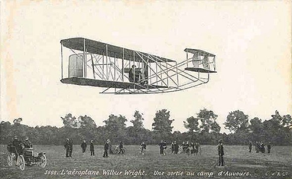

M2 Sigue líneas
Vamos a realizar un programa que siga la línea:
- Pero ¡¡AL REVÉS!!! ¿por qué marcha hacia atrás? (o sea, la cámara mira hacia la parte trasera del sentido de la marcha): mira al final de la página.
Fijaremos de antemano una velocidad pequeña de 25% y un incremento de velocidad de diferencia en los motores de 10% cuando no está centrado para que gire hasta que se centre. Veamoslo con un vídeo:
Solución
La solución es fácil con la librería TLC1543.py donde la función SENSORLINEA(cual) nos da el valor que lee los sensores IR. Recuerda que TLC1543.py en la misma carpeta que vamos a crear este programa y las incorporamos en el programa con import.
- También incorporamos las variables definidas en VARIABLES.py
¿Te atreves?
- Leemos la lectura de los 5 sensores
- Ajustamos la velocidad de los motores según si hay lectura de línea negra y donde
- La potencia PWM no puede pasar de 0 a 100 por eso limitamos los valores
- Si no hay linea negra que vuelva hasta que recupera la línea negra:
Fichero Siguelineas.py
import RPi.GPIO as GPIO
import time
import TLC1543
from VARIABLES import *
from random import randint
x=[0,0,0,0,0]
vel=25
blanco=14
incremento=10
tiempo = 0.2
##hacia DELANTE
GPIO.output(IN1,GPIO.LOW)
GPIO.output(IN2,GPIO.HIGH)
GPIO.output(IN3,GPIO.HIGH)
GPIO.output(IN4,GPIO.LOW)
while True:
lineanegra=0
#Leemos los siguelíneas
for i in range(5):
x[i]=TLC1543.SENSORLINEA(i)
if (x[i]<blanco):
lineanegra=1
#Decidimos velocidades
if (lineanegra): ##ha encontrado línea negra
##hacia DELANTE
GPIO.output(IN1,GPIO.LOW)
GPIO.output(IN2,GPIO.HIGH)
GPIO.output(IN3,GPIO.HIGH)
GPIO.output(IN4,GPIO.LOW)
velA=vel
velB=vel
if (x[1]<blanco):
velA=velA+incremento
velB=velB-incremento
if (x[3]<blanco):
velA=velA-incremento
velB=velB+incremento
if (x[0]<blanco):
velA=velA+incremento
velB=velB-incremento
if (x[4]<blanco):
velA=velA-incremento
velB=velB+incremento
if (velA<10):
velA=10
if (velA>90):
velA=90
if (velB<10):
velB=10
if (velB>90):
velB=90
##activamos motores
print ('con linea negra SENSORES=',x[0],'-',x[1],'-',x[2],'-',x[3],'-',x[4],'-VELA=',velA,'VELB=',velB);
PWMA.start(velA)
PWMB.start(velB)
#time.sleep(tiempo)
else: ##no tiene linea negra pues marcha atrás y que lo busque
GPIO.output(IN1,GPIO.HIGH)
GPIO.output(IN2,GPIO.LOW)
GPIO.output(IN3,GPIO.LOW)
GPIO.output(IN4,GPIO.HIGH)
while (lineanegra==0):
velA=randint(vel-incremento,vel+incremento)
velB=vel-(velA-vel) #el opuesto
print ('SIN linea negra VELA=',velA,'VELB=',velB);
PWMA.start(velA)
PWMB.start(velB)
time.sleep(tiempo)
for i in range(5):
x[i]=TLC1543.SENSORLINEA(i)
if (x[i]<blanco):
lineanegra=1
¿Por qué en este ejercicio ALPHABOT va al revés?
Por que los sensores siguelineas por la parte de atrás del sentido de la marcha PRODUCE UNA REALIMENTACIÓN POSITIVA es decir, cuando detecta que hay que girar, gira, pero la cola se mueve demasiado deprisa que produce que pierda la línea. Controlarlo es posible pero es difícil la demo de Alphabot lleva el software para hacerlo.
No seas cobarde!! Pruébalo.
- Cambia el código anterior las marchas es decir los GPIO.output los HIGH por LOW y viceversa
- Y también el control de giro, es decir en vez de +incremento pon -incremento y viceversa
- ¿Funciona?
Chocheando un poco.. esto me recuerda a una vieja historia..
Los pioneros de la aviación lo tuvieron difícil. Se lo podríamos preguntar al pastor del pueblo Coruña del Conde: Diego Marín Aquilera que en 1793 inventó un artilugio que volaba de forma controlada... la pena es que la Inquisición, el cura del pueblo junto con los lugareños no tenían ni idea que este español hubiera hecho historia, y que la aviación hubiera adelantado más de 100 años. Pensaban que eso era obra del demonio por lo tanto quemaron todos sus inventos.
Esa mala suerte no lo tuvieron los hermanos Wright que en 1903 volaron su primer artilugio:

[Fuente Wikipedia]
Pero... pusieron el timón delante, esto provocaba también una realimentación positiva (al levantar el timón, levantaba el morro, y esto provocaba que se levantase aún más, y viceversa a la hora de bajarlo). Los hermanos Wright patentaron su invento y gastaron todo su dinero en abogados para defender que nadie copiase su control, pero la verdad es ... que nadie lo hizo: La industria de la aviación detectó el fallo y los elementos de control van por detrás del ala principal, esto crea una realimentación negativa, por lo tanto mayor estabilidad en el vuelo y ... la ruina de los hermanos Wright.
¿En el diseño de este Alphabot habrá participado algún descendiente de los hermanos Wright?

Alphabot por varios autores bajo licencia Creative Commons Reconocimiento-NoComercial-CompartirIgual 4.0 Internacional License.